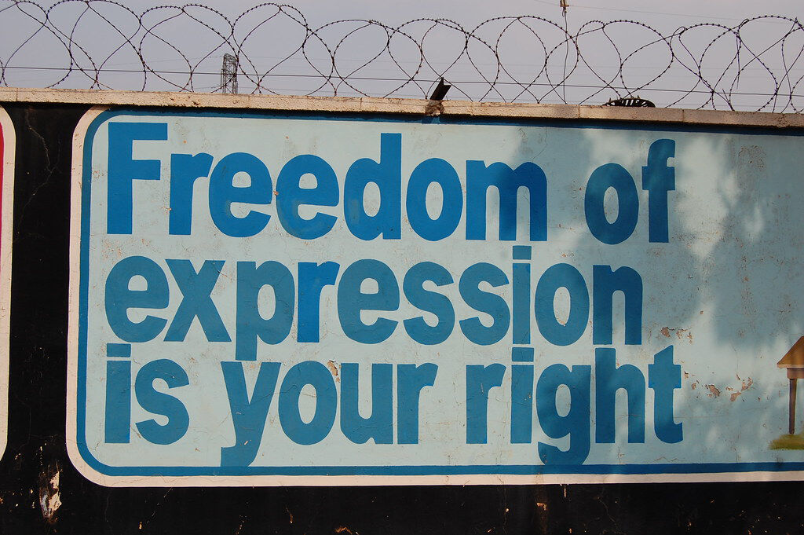
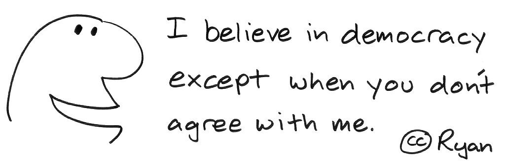
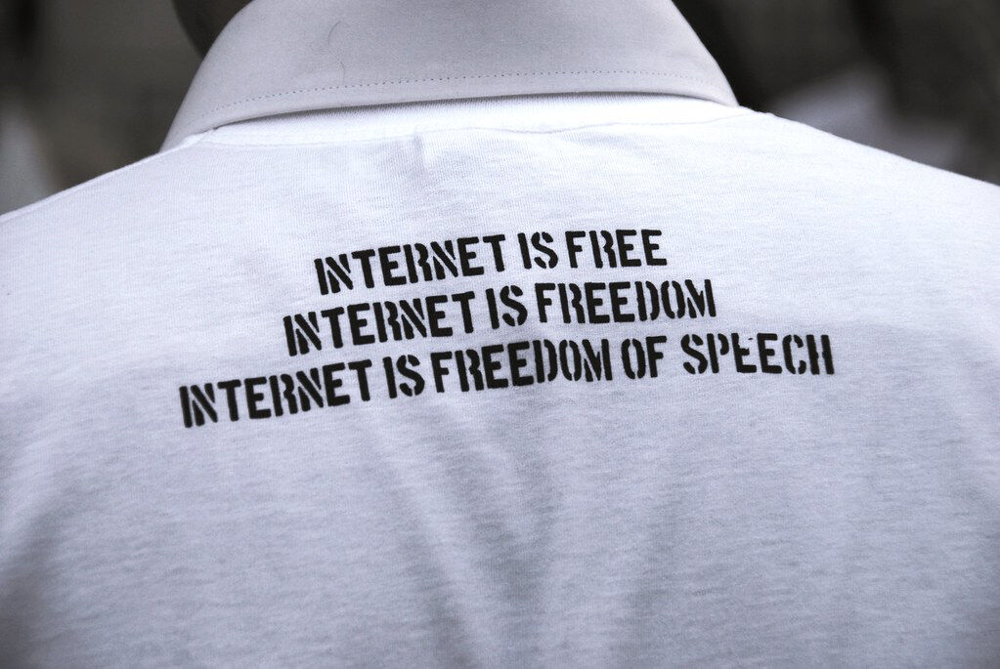

Trainees Edition
Trainers Edition
Trainees Edition
Trainers Edition
10.nodarbība: vārda brīvība
Nodarbības apraksts
Šīs nodarbības galvenais mērķis ir izskaidrot vārda brīvību un citas saistītas tiesības, un to funkcijas.
Nodarbības sekundārais mērķis ir sniegt vadlīnijas pasniedzējiem, kuri vēlas izmantot nodarbības saturu, lai mācītu savus studentus.
Atbilstoši šiem mērķiem tiek raksturota informācijas brīvība un sniegtas vadlīnijas priekšmeta pasniegšanai.
Studenti, kuri būs sekmīgi apguvuši šo nodarbību, spēs:
- izprast vārda brīvības definīciju un funkciju,
- atpazīt dažādas brīvības un to juridisko pamatu,
- identificēt sekas, ko rada pamatbrīvību trūkums,
- izprast mainīgās mediju vides ietekmi uz vārda brīvību.
Papildus tam pasniedzēji, kuri būs sekmīgi apguvuši šo nodarbību, iegūs izpratni par to, kā nodot tālāk zināšanas par informācijas brīvību.
Nodarbības struktūra
Nodarbība sastāv no šādām daļām:
- mērķi, satura izklāsts un mācību rezultāti,
- nodarbības struktūra,
- vadlīnijas studentiem,
- vadlīnijas pasniedzējiem (kā sagatavoties, izmantojamās metodes, ieteikumi),
- saturs (mācību materiāli),
- tests,
- informācijas resursi (izmantotie avoti, ieteicamie avoti un video).
Galvenie nodarbības mērķi, satura izklāsts un mācību rezultāti ir raksturoti nodarbības apraksta daļā. Vadlīnijas studentiem iekļauj instrukcijas un ieteikumus studentiem. Vadlīnijas pasniedzējiem palīdz pasniedzējiem dažādās mācību procesa fāzēs un sniedz noderīgus ieteikumus. Saturs ietver visus mācību materiālus un ar saturu saistītos vingrinājumus. Tests sastāv no apgalvojumiem, par kuriem jāatzīmē, vai tie ir pareizi vai nepareizi, kas palīdzēs novērtēt studenta sekmes. Informācijas resursi ir dalīti divās sadaļās – izmantotie avoti un ieteicamie avoti tālākai izpētei. Izmantotie avoti ir to materiālu saraksts, kas citēti mācību materiālā. Ieteicamie avoti satur papildu informācijas avotus un video, kurus būtu ieteicams izlasīt un noskatīties, lai labāk izprastu tēmu.
Vadlīnijas studentiem
Nepieciešams izlasīt tekstu un noskatīties ieteiktos video. Ieteicamie informācijas avoti var palīdzēt labāk izprast tēmu. Pēc mācību materiāla apgūšanas vēlams izpildīt testu, lai novērtētu savas sekmes. Ja nepieciešams, mācību materiālu var pārskatīt vēlreiz.
Vadlīnijas pasniedzējiem
Vadlīnijas pasniedzējiem ietver padomus un ieteikumus, kā studentiem pasniegt informāciju par tēmu.
Sagatavošanās
Ieteicams sagatavot prezentāciju (PowerPoint/Prezi/Canva), kas papildināta ar vizuālajiem materiāliem (attēliem un video) un skaidriem, pārliecinošiem piemēriem. Tāpat ieteicams pielāgot nodarbības piemērus un vingrinājumus jautājumiem, kas mērķauditorijai ir pazīstami. Vietējo (valstij specifisku) piemēru izvēle saistībā ar aktuālām vai labi zināmām problēmām palīdz labāk ilustrēt mācību saturu, kā arī pievērst studentu uzmanību. Jo pazīstamāki un populārāki ir izvēlētie piemēri, jo labāk tiek nodots vēstījums.
Nodarbības uzsākšana
Studentu iesaistīšanai var noderēt īss tests (3–5 jautājumi), izmantojot platformu Kahoot, vai atsevišķu jautājumu uzdošana, izmantojot Mentimeter. Jautājumi var kalpot gan kā motivējošs instruments, gan kā rīks, ar kura palīdzību iespējams apzināt studentu esošās zināšanas par nodarbības tēmu. Daži jautājumu piemēri: Kas ir vārda brīvība? Kas ir informācijas brīvība? Kādēļ šīs tiesības ir svarīgas?
Izmantojamās metodes
Mācību procesā var tikt izmantotas dažādas metodes, piemēram:
- lekcijas,
- diskusijas,
- darbs grupās,
- pašizvērtējums.
Ieteikumi pasniedzējiem
Iesildīšanās
Lai iesaistītu studentus un vienotos par to, kas tiks apgūts nodarbības laikā, ir lietderīgi uzdot dažus sākotnējos jautājumus par nodarbības tēmu. To var darīt grupu darbā, aicinot studentus diskutēt un apkopot idejas, vai arī individuāli, aicinot katru dalībnieku pierakstīt idejas uz līmlapiņām. Šo procesu var veikt šādi:
- Pajautājiet studentiem, ko viņi domā par potenciālajiem ierobežojumiem sociālajos medijos.
- Aiciniet studentus definēt dažādu brīvību jēdzienus, kā runas, domu vai vārda brīvību, un pajautājiet viņu domas par minēto brīvību funkcijām.
Nodarbības mērķa izskaidrošana
Skaidri jānorāda nodarbības mērķis (šajā gadījumā – izskaidrot vārda brīvību un un citas saistītas tiesības, un to funkcijas). Pēc iesildīšanās ar jautājumiem būs vieglāk izskaidrot nodarbības mērķus.
Nodarbības satura izklāsts
Iepazīstinot ar nodarbības saturu, ieklausieties studentos un iedrošiniet viņus aktīvi piedalīties.
- Pirms izklāstāt vārda brīvības vēsturi, aiciniet studentus padomāt par sevi kā par pilsoņiem un iedrošiniet viņus pārrunāt, vai viņi jūtas brīvi runāt par, piemēram, politiskiem jautājumiem, savā valstī vai sabiedrībā.
- Iepazīstinot ar brīvību funkcijām demokrātiskā sabiedrībā, pajautājiet, vai viņi uzskata, ka interneta vidē nepieciešami ierobežojumi.
Noslēgums
Sniedziet nodarbības kopsavilkumu un uzdodiet dažus jautājumus, kas palīdzētu izcelt būtiskāko satura izklāstā.
Varētu palīdzēt šāds jautājums:
- Pajautājiet studentiem, kā viņi reaģētu, ja valdība piemērotu kādus ierobežojumus viņu sociālo mediju kontiem.
Noslēdzot diskusiju, pārliecinieties, ka studenti saprot, ka šīs brīvības ir cilvēka pamattiesības, taču tām ir jābūt kādām robežām, lai nekaitētu citiem cilvēkiem.
Saturs: vārda brīvība
Ievads
Vārda brīvība, kas ir svarīga pamattiesība pati par sevi, ir būtiska arī citu brīvību un tiesību, kā domas brīvības un informācijas brīvības, aizsardzībai un atbalstam. Cilvēki izmanto šo tiesību ikdienas dzīvē, apmainoties ar idejām, viedokļiem un informāciju. Šī iemesla dēļ tiem, kas vēlas īstenot vārda brīvību, ir svarīgi saprast komunikācijas līdzekļus un struktūras un veidot vidi, kas sekmē šādu apmaiņu (Panday, b.g.).
Pēc Monteskjē, viena no demokrātijas teorētiķiem, domām vārda brīvība ir vissvarīgākā brīvība. Īpašības, kas padara cilvēkus par cilvēkiem, kā radošums un tikumība, darbojas un attīstās tikai brīvā vidē. Vidē, kur idejas var tikt brīvi izteiktas, demokrātiskās institūcijas turpina pastāvēt un tām ir iespēja attīstīties. Brīvs indivīds ir indivīds, kurš var domāt brīvi un brīvi izteikt savu viedokli (Çelik & Tonta, 1996, 1. lpp.).
Vārda brīvība mūsdienu sabiedrībā ir pamattiesība, un tai ir īpaša nozīme labi funkcionējošās konstitucionālās demokrātijās. Šī brīvība atšķir atvērtas sabiedrības no slēgtām sabiedrībām un liberālas sabiedrības no autoritārām. Taču vārda brīvības jēdziens ietver daudz vairāk nekā tikai brīvību paust savu viedokli. Ir vispārpieņemts, ka domas brīvību, informācijas brīvību un runas brīvību var analizēt, izmantojot jumta “vārda” standartu (Hugelier, 2011, 61.–62. lpp.; Legal Information Institute, b. g.).
Starp vēsturē pirmajiem avotiem par cilvēka pamattiesībām, kā vārda brīvība, runas brīvība un informācijas brīvība, priekšplānā izvirzīti šie avoti:
- Zviedrijas Likums par preses brīvību (1766): Zviedrijas parlaments pieņēma tiesību aktu, kas tiek atzīts par pirmo likumu pasaulē, kas atbalsta preses un informācijas brīvību. Ar likumu tika pieņemts princips, ka valsts pilsoņi var paust un izplatīt informāciju bez bailēm no represijām. Šis standarts ir kļuvis par atskaites punktu demokrātijām visā pasaulē (Cunningham, b. g.; Government Offices of Sweden, 2015).
- Amerikas Savienoto Valstu Konstitūcijas Pirmais labojums (1791): “Kongress nevar izdot likumus .., kas ierobežo vārda brīvību vai preses brīvību” (Cunningham, b. g.).
- Džona Stjuarta Milla “Par brīvību” (1859): šajā grāmatā uzsvērta vārda brīvības lietderība (Sorabji, 2021, 62.–63. lpp.).
- Amerikas Savienoto Valstu Konstitūcijas Četrpadsmitais labojums (1868): “Indivīdiem visos štatos ir vienlīdzīgas individuālās tiesības uz pirmajos astoņos labojumos minētajām ‘privilēģijām un brīvībām’, ieskaitot vārda brīvību” (Sorabji, 2021, 62.–63. lpp.).

rhinman "vārda brīvība ir tavas tiesības" ir licencēts atbilstoši CC BY 2.0
Mūsdienās vārda brīvība ir cilvēka pamattiesības, ko atzinušas Apvienotās Nācijas Vispārējā cilvēktiesību deklarācijā (VCD) 1948. gadā. Deklarāciju apstiprināja Apvienoto Nāciju Ģenerālās asamblejas pārstāvji no dažādām valstīm ar dažādu juridisko un kultūras fonu no visas pasaules. Deklarācija pirmo reizi noteica cilvēka pamattiesības, kuras ir vispārēji aizsargājamas, un tā ir tulkota vairāk nekā 500 valodās (United Nations, b. g.).
VCD 19. pantā šīs tiesības ir pieminētas šādi (United Nations, 1948):
“Katram cilvēkam ir tiesības uz pārliecības brīvību un tiesības brīvi paust savus uzskatus; šīs tiesības ietver brīvību netraucēti palikt pie saviem uzskatiem un brīvību meklēt, saņemt un izplatīt informāciju un idejas ar jebkuriem līdzekļiem neatkarīgi no valstu robežām.”
Apvienoto Nāciju Ģenerālā asambleja pieņēma Starptautisko paktu par pilsoniskajām un politiskajām tiesībām, tas stājās spēkā 1976. gadā; vārda brīvības akts (19. pants) tika atjaunināts šādi (UN General Assembly, 1966):
- Ikvienam ir tiesības netraucēti pieturēties pie saviem uzskatiem.
- Ikvienam ir tiesības brīvi paust savus uzskatus, šīs tiesības ietver brīvību meklēt, saņemt un izplatīt dažāda veida informāciju un idejas mutvārdos, rakstveidā, izmantojot presi vai mākslinieciskās izpausmes formas, vai pēc savas izvēles ar jebkura cita medija starpniecību.
- Šā panta 2.punktā paredzēto tiesību izmantošana uzliek īpašus pienākumus un atbildību. Tāpēc tā var būt pakļauta zināmiem ierobežojumiem, taču tiem jābūt likumā noteiktiem un nepieciešamiem:
- citu personu tiesību un reputācijas cienīšanai;
- nacionālās drošības, sabiedriskās kārtības, sabiedrības veselības vai tikumības aizsardzībai.
Vārda brīvība ir atzīta par vienu no cilvēktiesībām arī Eiropas Cilvēktiesību konvencijas 10. pantā 1952. gadā. Pantā ir šāds atzinums (Council of Europe, 1952):
“Ikvienam ir tiesības brīvi paust savus uzskatus. Šīs tiesības ietver uzskatu brīvību un tiesības netraucēti saņemt un izplatīt informāciju un idejas bez iejaukšanās no sabiedrisko institūciju puses un neatkarīgi no valstu robežām. Šis pants neapstrīd Valstu tiesības pieprasīt radioraidījumu, televīzijas raidījumu un kino demonstrēšanas licencēšanu.”
Brīvība, par ko ir runa šajos pantos, ietver ne tikai indivīda tiesības paust savus uzskatus (citiem vārdiem sakot, “runas brīvību”), bet arī tiesības saņemt un izplatīt informāciju un idejas. Tai pašā laikā šie panti drīzāk liek uzsvaru uz idejām, nevis informāciju (Hugelier, 2011, 64. lpp.).
Pastāv strīdi (it īpaši, ņemot vērā dažādas politiskās un filozofiskās perspektīvas) par to, kādiem ierobežojumiem var tikt pakļauta brīvība, kas ietverta “vārda brīvībā”. Daži uzskata, ka nebūtu jāierobežo neviens izteikums, ja vien tas nenoved pie fiziskas darbības, kamēr citi uzskata, ka uz izteikumiem, kuri varētu būt daļa no psiholoģiskā spiediena (kā naida runa, pornogrāfija), nevajadzētu attiecināt brīvības jēdzienu (van Mill, 2021). Eiropas Cilvēktiesību konvencijas 10. pants šos ierobežojumus raksturo šādi (Council of Europe, 1952):
“Tā kā šo brīvību īstenošana ir saistīta ar pienākumiem un atbildību, tā var tikt pakļauta tādām formalitātēm, nosacījumiem, ierobežojumiem vai sodiem, kas paredzēti likumā un nepieciešami demokrātiskā sabiedrībā, lai aizsargātu valsts drošības, teritoriālās vienotības vai sabiedriskās drošības intereses, nepieļautu nekārtības vai noziegumus, aizsargātu veselību vai morāli, aizsargātu citu cilvēku reputāciju vai tiesības, nepieļautu konfidenciālas informācijas izpaušanu vai lai saglabātu tiesas autoritāti un objektivitāti.”
Jauno mediju ekosistēma un informācijas brīvība
Citu cilvēku viedokļa uzklausīšana var iemācīt kaut ko, ja viņiem ir taisnība, vai skaidrāk parādīt patiesību, ja tā nav. Citiem vārdiem sakot, indivīds, kuram tiek pasniegtas dažādas domas, labāk attīsta savu domāšanu (Sorabji, 2021, 64.–65. lpp.). Medijiem ir būtiska loma kā “sabiedrības sargsuņiem”, tā kā to galvenais uzdevums ir veidot pamatu viedokļu un ideju paušanai un sniegt un saņemt informāciju, ja vien tas ir sabiedrības interesēs. Informācijas brīvība, tāpat kā vārda brīvība, ir ārkārtīgi svarīga brīvu mediju pastāvēšanai. Starp vārda brīvību un informācijas brīvību pastāv neapšaubāma saistība (Hugelier, 2011, 63. lpp.).
Brīvs indivīds ir tāds indivīds, kurš var domāt un paust savu viedokli brīvi. Priekšnoteikums tam ir tiesības piekļūt precīzai, neizkropļotai informācija, ko sauc par informācijas brīvību. Ir redzams, ka valstīs, kur šīs tiesības nav pietiekamas, sabiedriskā doma pienācīgi neveidojas, un nedemokrātiski režīmi izmanto plašsaziņas līdzekļus, lai pašu tautai uzspiestu apstākļus, kas izriet no nepatiesa situācijas novērtējuma. Tādēļ priekšnoteikums domas brīvībai demokrātijā ir pilsoņu tiesības piekļūt informācijai (Çelik & Tonta, 1996, 1. lpp.).
“Informācijas meklēšana ir būtiska tam, lai atrastu patiesību, kura, savukārt, ir būtiska kolektīvai lēmumu pieņemšanai demokrātiskā sabiedrībā.”
(Hugelier, 2011, 64. lpp.)
Mūsdienu sabiedrība plaši izmanto savu informācijas brīvību ar mediju palīdzību. Tādējādi sabiedrības interesēs ir atbalstīt preses brīvību, un iespēja apgūt un izplatīt dažāda veida ziņas ar plašsaziņas līdzekļu palīdzību ir atzīta kā tiesības Vispārējā cilvēktiesību deklarācijā, Eiropas Cilvēktiesību konvencijā un Helsinku Nobeiguma aktā neatkarīgi no valstu robežām (Çelik & Tonta, 1996, 1. lpp.). Starptautiskā organizācija “Reportieri bez robežām” (RSF), kuriem rūp šo tiesību vienlīdzīga izmantošana, uzrauga žurnālistu apstākļus visā pasaulē un ik gadu sarindo valstis atbilstoši to preses brīvības pakāpei (Reporters Without Borders, 2021).

ryan2point0 "Selektīvā demokrātija" ir licencēta atbilstoši CC BY-NC-ND 2.0
Visas dažādās balsis un viedokļi ir pelnījuši tikt godīgi uzklausīti ne tikai runas un vārda brīvības dēļ, bet arī tādēļ, lai cilvēkiem sniegtu piekļuvi daudzveidīgai informācijai (Pickard, 2020). Digitālajā laikmetā komunikācija ir attīstījusies no epastiem un statiskas tīmekļa pārlūkošanas uz interaktīvāku un uz dalīšanos orientētu globālu parādību, kas strauji sasniedz milzīgu auditoriju un kam ir ārkārtīgi plašs mērogs. Šī radikālā izmaiņa, galvenokārt sociālo mediju radīta, ir sekmējusi interneta evolūciju. Digitālo teholoģiju izplatīšanās ir ne tikai veicinājusi pieeju neierobežotam daudzumam informācijas, bet arī radījusi daudzveidīgu balss, attēla, teksta un koda ekosistēmu, kam var piekļūt no dažāda veida medijiem, izmantojot dažāda veida tehnoloģijas (Panday, b. g.).
Šīs evolūcijas rezultātā ir pieaudzis informācijas daudzums, kam iespējams piekļūt, ir zudušas dažas iespējamās barjeras informācijas piekļuvei (kā laika un telpas ierobežojumi), un tas ir padarījis komunikāciju demokrātiskāku. Šādā veidā interneta lietotājiem ir radusies iespēja uzņemties rakstnieka, izdevēja vai raidījumu veidotāja lomu internetā, apejot tradicionālo mediju ekosistēmas kontroli, paverot neierobežotas iespējas veidot, dalīties un apmainīties ar visu veidu saturu. No šāda skatpunkta internets ir izvirzījies kā globāli pieejams komunikācijas rīks bez tradicionālajiem runas un vārda brīvības ierobežojumiem. Taču internets kļūst arvien kontroversiālāks, tiešsaistes satura daudzumam pieaugot, tā uzticamība kļūst apšaubāma, un algoritmu ietekmē cilvēki tiek iesprostoti līdzīgu balsu lokā. Tā rezultātā diskusijas, kurās tiek problematizēta brīva informācijas plūsma un vārda brīvība, ir kļuvušas aktīvākas. Citiem vārdiem sakot, tam ir neparedzētas sekas attiecībā uz varas un kontroles formām, kas skar internetā izplatāmā satura regulēšanu (Panday, b. g.).
Internets un brīvība
Parādoties internetam, tam bija revolucionāra ietekme uz ideju paušanu un tas mainīja dažus fundamentālus aspektus, kas apkopoti zemāk (Zeno-Zencovich, 2008, 100.–112.lpp.):
- Vārda brīvība kā individuāla brīvība: lai gan tradicionālie mediji vēl joprojām dominēja, parādījās jauns modelis, kurā indivīdiem bija iespēja izplatīt savas idejas neatkarīgi no tiem.
- Mediju starpnieka lomas zaudēšana: interneta vidē uzmanība ir pārvirzīta uz indivīdu ideju izpausmi, kas ir būtiski mainījis plašsaziņas līdzekļu tradicionālo lomu. Tradicionālie mediji ne tikai zaudēja ideju izplatīšanas monopolu, bet arī pārstāja būt par privileģētu informācijas avotu.
- Dati pret informāciju: tiek mainīts fokuss no vārda brīvības uz komunikācijas un datu izplatīšanas brīvību, citiem vārdiem sakot, uz brīvību sniegt informāciju.
- Komunikācijas paradumu maiņa: internetam ir citādāka loģika un semantika nekā tradicionālajiem medijiem, un tas rada jaunu vai citādu pieredzi tā lietotājiem. Tas ietekmē arī to, kā tiek paustas idejas.
- Uzņēmējdarbība internetā: interneta izplatībai palielinoties, ir mainījušies vairāku industriju procesi un metodes, kā arī radušies jauni. Sistēmas mērķim vajadzētu būt nodrošināt atbildīgu informācijas savākšanu, apstrādi un izplatīšanu sabiedrībā.
- Starptautiskums: komunikācija un tīmekļa lapas internetā to izcelsmes dēļ ir pieejamas un tām var piekļūt visā pasaulē, un to saturu nevar ierobežot atsevišķu tiesību sistēmu likumi.

BEE FREE - PGrandicelli [the social bee] "internets ir runas brīvība" ir licencēts atbilstoši CC BY-NC-SA 2.0
Lai gan internets ir sagatavojis tādu pamatu brīvībai un demokrātijai, kādu cilvēce iepriekš nav piedzīvojusi, brīvību ierobežojumi tajā ir diskutējams jautājums. Šajā vidē, kur cilvēki ir izdevēji, rakstnieki, informācijas veidotāji un izplatītāji bez starpniekiem, var tikt izplatīta arī kaitīga, nepatiesa, tīši manipulatīva vai neobjektīva informācija. Tā var kļūt par milzīgu problēmu, piemēram, gadījumā, ja personīgie profili uz vārda brīvības pamata tiek izmantoti, lai mērķēti vērstos pie vēlētājiem. Ir iespējams uzskaitīt daļu no problemātiskās informācijas, kas tiek izplatīta internetā, it īpaši sociālajos medijos (Sorabji, 2021, 112.–133. lpp.):
- Uzņēmumi nepamatoti gūst labumus, izmantojot cilvēku personas datus: tie izmanto profilus, kas iegūti no cilvēku digitālās pēdas sociālajos tīklos, lai mērķēti vērstos pie indivīdiem ar reklāmām vai politisko propagandu (tas ietver šo datu nodošanu trešo pušu uzņēmumiem).
- Dezinformācijas vai kaitīgas informācijas izplatīšana, lai manipulētu ar cilvēku viedokļiem un lēmumiem vai viņiem kaitētu.
- Demokrātiskas balsošanas apdraudējums: neregulēti datu starpniecības uzņēmumi iegūst personu profilus no personas datiem, kas izplatīti internetā, lai propagandētu noteiktu politisko partiju vai uzskatus.
- Atbalss kameras: viens no negatīvajiem rezultātiem, kas rodas no dažāda satura izplatīšanas dažādām auditorijām, balstoties uz dažādiem profiliem. Atbalss kamerās cilvēki dzird savus viedokļus, nevis patiesību, kas ir īpaši svarīgi, ja saturs ir politisks.
- Reklāmas vietu pārdošana politiskajiem ekstrēmistiem vai sensacionālām tīmekļa vietnēm: sociālo mediju uzņēmumi, pārdodot savas reklāmas vietas, dod priekšroku sensacionālam vai ekstrēmistiskam saturam, kas tiek vairāk lasīts. Tā kā šis saturs tiek lasīts vairāk, sociālo mediju uzņēmumi pelna vairāk.
- Grūtības izņemt saturu no sociālajiem medijiem, kad tas kļūst pārāk ekstrēmistisks: tajos parasti nav pietiekami daudz moderatoru, kas varētu tikt galā ar šo problēmu. Šāda satura moderēšanai parasti nepieciešama morāles izpratne.
- Ietekme uz sabiedrisko dzīvi un mentālo un fizisko veselību: īpaši jaunākās paaudzes uztraucas, vai viņu pašportreti sociālajos medijos saskanēs ar vienaudžu, vai vienaudži papūlēsies atbildēt uz viņu ziņām. Nopietnāki veselības apdraudējumi var rasties, saskaroties ar ierakstiem, kas veicina paškaitējumu vai pašnāvību.
Kā iepriekš minēts, vārda vai runas brīvības būtība ir atklāt patiesību un ļaut mācīties no citiem. Bet tādā sociālo mediju vidē, kur datu pārdošana vai profilu veidošana no šiem datiem ir vērtīgāka nekā patiesība, šīs cilvēka pamattiesības nav īsti piemērojamas (Sorabji, 2021, 133. lpp.).
Tajā pašā laikā ne katra datu vākšana ir neleģitīma, piemēram, liels tiešsaistes e-komercijas uzņēmums var piedāvāt jaunas preces, apskatot kāda personas datus un izvēles. Sarkanā līnija varētu būt šo datu pārdošana citiem uzņēmumiem vai, kā minēts iepriekš, datu lietošana, lai kaitētu cilvēkiem (Sorabji, 2021, 122. lpp.).
Dalīšanās ar informāciju vai profilu veidošana internetā ne obligāti ir kaitīga darbība. Būtiskais šeit ir apzināties, ka ar to iespējams manipulēt, un izturēties atbildīgi, lietojot internetu, tieši tāpat kā dzīvojot sabiedrībā ikdienas dzīvē, zinot, ka mūsu brīvība nav neierobežota (Sorabji, 2021, 172. lpp.). Tādas izglītošanas programmas kā mediju vai ziņu pratība ir daži no iedarbīgajiem risinājumiem šādas apziņas stiprināšanai sabiedrībā.
Tests
Izmantotie informācijas avoti
Council of Europe. (1952). The European Convention on Human Rights. Strasbourg: Directorate of Information. Retrieved from https://www.echr.coe.int/documents/convention_eng.pdf.
Cunningham, J. M. (n.d.). A Brief History of Press Freedom. Encyclopedia Britannica. Retrieved from https://www.britannica.com/story/250-years-of-press-freedom.
Çelik, A. & Tonta, Y. (1996). Düşünce özgürlüğü, bilgi edinme özgürlüğü ve bilgi hizmetleri. In Tonta, Y. & Çelik, A. (Eds.). Bilgi Edinme Özgürlüğü (Freedom of Information), (pp. 1-13). Ankara: Türk Kütüphaneciler Derneği, 1996.
Government Offices of Sweden. (2015, May 17). The Constitution of Sweden. Retrieved from https://www.government.se/information-material/2013/08/the-constitution-of-sweden/.
Hugelier, S. (2011). Freedom of expression and transparency: Two sides of one coin. Jura Falconis, 47(1), 61–91.
Legal Information Institute. (n.d.). Freedom of Expression - Speech and Press. Retrieved from https://www.law.cornell.edu/constitution-conan/amendment-1/freedom-of-expression-speech-and-press.
Panday, J. (n.d.). Freedom of Expression in a Digital Age: Effective Research, Policy Formation & the Development of Regulatory Frameworks in South Asia. Retrieved from https://cis-india.org/internet-governance/events/freedom-of-expression-in-digital-age.
Pickard, V. (2020). Democracy Without Journalism? Confronting the Misinformation Society. New York: Oxford University Press.
Reporters Without Borders. (2021). World Press Freedom Index - 2021. Retrieved from https://rsf.org/en/ranking.
Sorabji, R. (2021). Freedom of Speech and Expression: Its History, its Value, its Good Use, and its Misuse. New York: Oxford University Press.
UN General Assembly. (1966, December 16). International Covenant on Civil and Political Rights. Retrieved from https://www.ohchr.org/en/professionalinterest/pages/ccpr.aspx.
United Nations. (1948). Universal Declaration of Human Rights. Retrieved from https://www.un.org/sites/un2.un.org/files/udhr.pdf.
United Nations (n.d.). Universal Declaration of Human Rights. Retrieved from https://www.un.org/en/about-us/universal-declaration-of-human-rights.
van Mill, D. (2021). Freedom of speech. The Stanford Encyclopedia of Philosophy (Spring 2021 Edition), Zalta, E.N. (Ed.). Retrieved from https://plato.stanford.edu/archives/fall2016/entries/freedom-speech/#Aca.
Zeno-Zencovich, V. (2008). Freedom of expression: A critical and comparative analysis. New York: Routledge-Cavendish.
Ieteicamie informācijas avoti
Cunningham, J. M. (n.d.). A Brief History of Press Freedom. Encyclopedia Britannica. Retrieved from https://www.britannica.com/story/250-years-of-press-freedom.
McDonald, A. (2015, November 5). Freedom of information. Encyclopedia Britannica. https://www.britannica.com/topic/freedom-of-information.
UNESCO. (n.d.). Freedom of Expression: A Fundamental Human Right Underpinning all Civil Liberties. https://en.unesco.org/70years/freedom_of_expression.
Weibull, L. (2020, November 25). Freedom of the Press Act of 1766. Encyclopedia Britannica. https://www.britannica.com/topic/Freedom-of-the-Press-Act-of-1766.
Ieteicamie video
Langton, R. (2015). What is the Point of Free Speech? https://www.youtube.com/watch?v=7vMiiMLrZuo.
Crash Course. ()2015. Freedom of the Press: Crash Course Government and Politics #26. https://www.youtube.com/channel/UCX6b17PVsYBQ0ip5gyeme-Q.